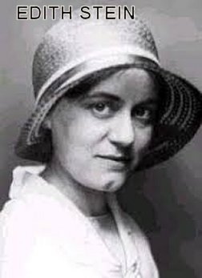
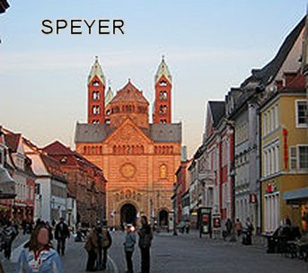
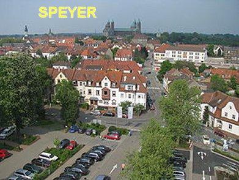
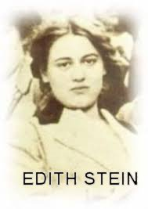

cultura. Fez Conferências
em Nuremberg, Salzburg, Speyer, Bendorf e Heildelberg sobre a questão feminina.
cultura. Fez Conferências
em Nuremberg, Salzburg, Speyer, Bendorf e Heildelberg sobre a questão feminina.
“EM BUSCA DA VERDADE”
PRIMEIRA GRANDE GUERRA MUNDIAL

Durante a Primeira Grande Guerra Mundial, Edith prestou sua ajuda como voluntária da Cruz Vermelha no Hospital Militar, ganhando uma medalha de “honra ao mérito”. Também, no ano de 1916 concluiu o seu doutorado, e foi chamada por Husserl para ser sua Assistente na Universidade de Friburgo (1916-1917). Nesta mesma época da guerra, soube que o Dr. Reinach tinha morrido no campo de batalha. A esposa dele, Paulina, que era sua amiga e conhecia as qualidades profissionais de Edith, pois sabia que ela era Assistente do Dr. Edmund Husserl, lhe confiou à difícil tarefa de reordenar as obras que ainda não tinham sido publicadas pelo seu marido. Edith sabia que Paulina amava o seu marido e era correspondida por ele, de maneira visível, carinhosa e admirável. Então imaginou encontrar a amiga totalmente destruída e desfeita pela morte do marido. Mas teve uma surpresa, Paulina se apresentava com uma face séria, mas conformada, embora se percebesse bem ocultada, certa dor naquela amorosa aceitação; todavia, a cadencia suave das suas palavras indicava serenidade de espírito, como se tivesse sido transfigurada por uma luz misteriosa. Edith ficou parada, admirada, mas não comentou nada em respeito aos sentimentos da sua amiga. Entretanto, mais tarde, impressionada com aquele acontecimento, escreveu: “Aquele foi verdadeiramente o meu primeiro encontro com a força Divina que se comunica com aqueles que a abraçam. Naquele momento minha incredulidade desmoronou. O poder de CRISTO SE levantou radiante diante do meu olhar atônito”. A Doutora Edith acabava de encontrar NOSSO SENHOR JESUS CRISTO. A partir daquele acontecimento marcante, com muito interesse começou a ler e estudar o Novo Testamento.
FÉRIAS INESQUECÍVEIS
Em 1920, durante as férias da Universidade, ela foi para um sítio de amigos em Bergzabern. O tempo passava agradavelmente entre o trabalho e a boa conversa dos amigos. Os hospedeiros também tinham em casa, uma linda e volumosa biblioteca. Certo dia tendo ficado sozinha em casa, com a ausência dos amigos, decidiu visitar a biblioteca do casal. E para sua surpresa, logo encontrou um livro que chamou a sua atenção: “A Vida de Santa Teresa D’Ávila” denominado “LIVRO DA VIDA”, escrito por ela mesma. Passou a noite inteira e entrou na madrugada lendo o livro até a última página. A aurora da manhã já despontava, quando ela emocionada, concluía a leitura da última página do livro, e disse: “Esta é a Verdade!” Edith compreendeu que a “Verdade” era exatamente AQUELE DEUS de Quem e para Quem, o seu espírito almejava encontrar para sua felicidade definitiva. Ela estava emocionada e vibrante de alegria.
BATISMO, EUCARISTIA E CRISMA

Terminada as férias, voltou ao trabalho e também fez muitos contatos com Escolas e Universidades, sempre com o mesmo objetivo de conseguir uma cadeira para lecionar. Mas suas tentativas se revelaram inúteis, em face dos velhos e abomináveis preconceitos contra a mulher que impediam, e por isso, não conseguiu a vaga disponível em nenhuma Faculdade.
EXPERIÊNCIA COM AS IRMÃS DOMINICANAS
Em 1923, com 32 anos de idade, então decidiu escolher uma vida claustral em (Speyer) Espira, como hóspede das Irmãs Dominicanas que dirigiam o Instituto Santa Madalena, onde ela passou a ensinar o idioma e literatura alemã às alunas do segundo grau. Os primeiros anos foram tranquilos e lhe permitia repartir o seu tempo com os deveres escolares, as orações, obras de caridade e estudo da filosofia de São Tomás de Aquino. E São Tomás lhe fez compreender: “Quanto mais alguém é atraído por DEUS, tanto mais deve sair de si”... (ou seja, deve levar ao mundo a grandeza da vida Divina). E como ela mesma disse: “Colocar os próprios talentos a serviço da Verdade”, e portando, “a serviço de DEUS”, porque “realmente ELE é a Verdade”.
Desse modo, decidiu acolher
todos os convites que recebia e retomar os seus estudos filosóficos e suas
publicações, bem como fazer conferências, especialmente sobre o tema mulher, a
sua educação e sua importância na vida dos povos. E assim as oportunidades foram
aparecendo em razão da sua grande cultura. Fez Conferências
em Nuremberg, Salzburg, Speyer, Bendorf e Heildelberg sobre a questão feminina.
Por outro lado, na convivência em Espira (Speyer), com as Irmãs Dominicanas, onde permaneceu até 1931, também lhe foi confiada à tarefa de preparar as jovens Noviças e as Professas. Ela sempre dizia: “A coisa mais importante a uma professora é que ela esteja repleta do Espírito de CRISTO, antes que ela O encarne em sua própria pessoa”. A mulher que a Doutora Stein propunha como modelo a ser seguido por todas, era sempre “MARIA, NOSSA SENHORA”; “sempre humilde, discreta, silenciosa, esquecida de SI Mesma, transparente, afetuosa, atenta a escutar em silêncio, a Voz do SENHOR, e pronta a seguir SUA Vontade, em espírito de obediência”. Todos em Madalena tinham amizade e gostavam da Professora Edith. Durante os anos de trabalho alternou a redação de textos filosóficos e pedagógicos, reservando o tempo para o recolhimento e a oração no Instituto Religioso, mas continuava aceitando convites para fazer conferências em outras regiões, inclusive na Renânia, na Westfália, em Zurique e outras cidades. Assim aconteceu até que chegou à hora de partir. Recebeu correspondência de uma amiga sobre a livre docência no Instituto Superior Alemão de Pedagogia Científica em Münster. Afinal, era a concretização de uma cadeira na Universidade que ela procurava alcançar. E também por que estava sempre aconselhada pelos seus Superiores e pelo seu Diretor Espiritual de procurar alcançar este objetivo, porque seria muito bom para ela. Na verdade Edith se mantinha indiferente ao seu sucesso, se colocando nas Mãos de DEUS, e O deixava sempre decidir por ela. Assim sendo, sentindo-se impulsionada pelo SENHOR, partiu para Münster.
DOCENTE EM MÜSTER
Viajou para lá e conseguiu concretizar no ano de 1932 uma vaga como professora do famoso Instituto Alemão de Pedagogia Científica, na cidade de Münster. E

como sempre, nas oportunidades aceitou e realizou Conferências em diversas cidades na Alemanha e na Suíça. Também, no último Congresso de Juvisy, organizado na França, pela “Societé Thomyste” sobre a Fenomenologia, dentre todos os nomes ilustres da filosofia católica da França e da Bélgica, Edith Stein foi à única mulher a ser convidada. Desse modo, não é difícil compreender o admirável e vasto conhecimento dela, que a projetou com grande evidência na Europa.Por outro lado suas obras e traduções eram procuradas com interesse e constância, evidenciando a grandeza da amplitude espiritual dos seus trabalhos científicos. Publicou nesta mesma época com admirável resultado, o segundo volume da sua tradução da Obra de São Tomás de Aquino “Questiones Disputatae de Veritate”.
Em Münster ficou hospedada no Instituto das Irmãs, que possuíam o Colégio Marianum, onde ela já era conhecida e havia se hospedado em outras ocasiões. Então a noticia correu ligeira, de que a jovem professora tinha voltado... Foi uma alegria geral. Edith era verdadeiramente uma pessoa muito humilde e modesta, e procurava ajudar e ser útil a todos, e também, sempre arranjava um tempo necessário para ir a Capela e permanecer junto do SENHOR. Chegava a participar de três Santas Missas num único dia. Mantinha sempre a face serena e equilibrada. Entretanto, na continuidade dos meses de convivência, as estudantes começaram a observar que a Dra. Edith estava revelando certa tristeza e permanecendo muito reservada. E verdadeiramente o que estava acontecendo era verdade, as estudantes do “Marianum” tinham plena razão. A causa da tristeza e preocupação dela era motivada pela situação política, que se revelava violenta e autoritária. Com o partido nacional-socialismo no Governo da Alemanha, começaram as perseguições aos não-arianos que ocupavam empregos públicos. Então, ela logo compreendeu que pertencendo à raça judaica não podia permanecer naquele posto de Professora da Universidade. Assim, por decisão própria, a Doutora Edith Stein deu a sua última aula no dia 25 de Fevereiro de 1933, e pediu demissão do magistério.

SUA OBRA SEGUIA FIRME
Seus numerosos artigos, publicados em revistas de alto nível, as Traduções das Cartas e do Diário do Cardeal Newmann para o alemão, seus ensaios sobre educação, formação e missão da mulher, ampliaram muito mais a sua fama. Além de tudo isso, ela redigiu artigos em boletins comunitários, escreveu um Tratado sobre “Vias do Conhecimento de DEUS”, fez também monografias de Santa Tereza d’Ávila, de Santa Isabel da Hungria, e de outras Santas; e ainda, começou à tradução e ao comentário do “Scientia Crucis” de São João da Cruz. Por isso, de toda parte recebia convites para organizar ciclos de conferências de caráter científico, pedagógico e religioso.
VISITOU SUA MÃE
Também aproveitou para visitar sua mãe que já estava com mais de 80 anos de idade, e com ela conversou durante longo tempo, expondo-lhe todas as suas dificuldades vencidas e o novo e coerente caminho que escolheu para sua existência. A mãe uma senhora idosa e lutadora, já conhecia muitas veredas da vida, e por isso mesmo, aceitou os argumentos da filha e concordou com o Catolicismo que ela abraçou. Juntas permaneceram unidas num forte e longo abraço, dando graças ao Bom DEUS da Vida, por tudo o que lhes aconteceram ao longo da existência, uma preciosa experiência humana, sobretudo, pela permanente e carinhosa união de toda a sua família.